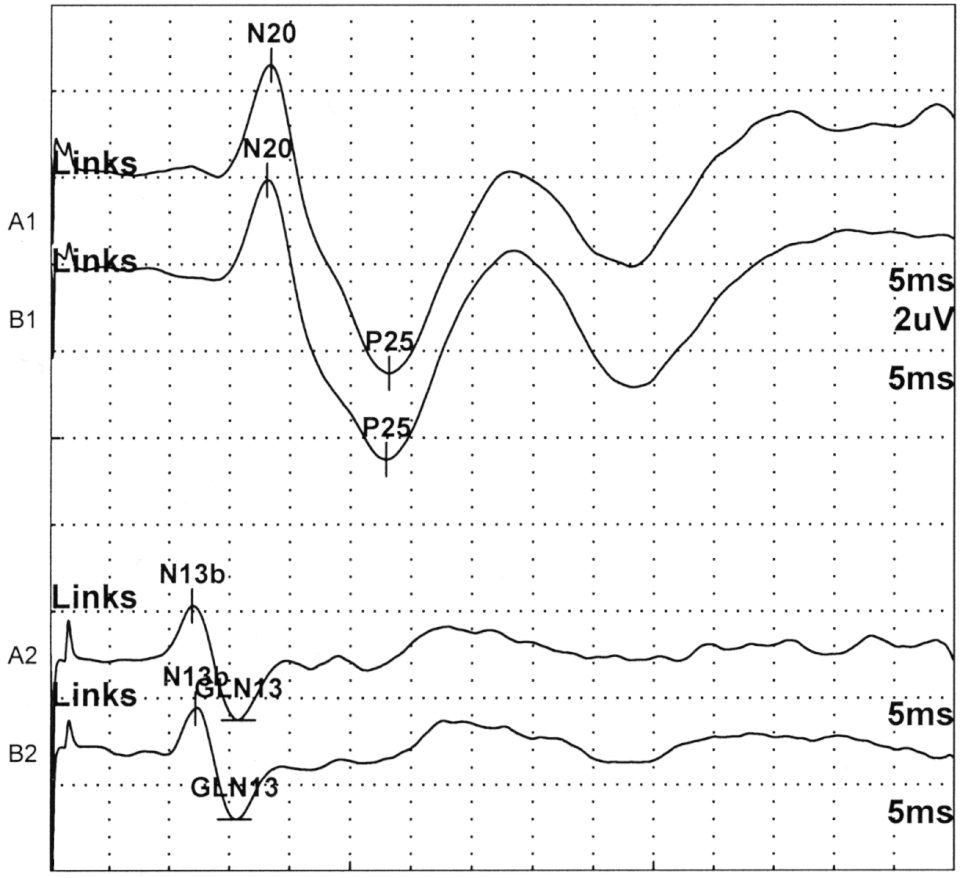

From suspicion to testing
Neurological examination, CT, MRI, EEG, EMG, lumbar puncture, PET, genetics and memory tests.
Examination and tests
 Examination and tests
Examination and testsNeurological examination
With a reflex hammer, a torch and a few manoeuvres, a neurologist can locate where the problem is before ordering any test. What is examined and why.
Read → Examination and tests
Examination and testsCognitive tests
Brief tests of memory, attention and language, such as the MoCA or the clock test, and full neuropsychological assessments. What they measure and why a result is not a diagnosis.
Read →Imaging
 Imaging
ImagingCT head scan
Computed tomography is fast and available in almost every hospital: it is the first test for a stroke, a head injury or a sudden headache. What it shows and what it does not.
Read → Imaging
ImagingBrain MRI
The test that shows the brain and spinal cord best, without radiation. Why it is requested, how to prepare, which sequences exist and why you must say if you have metal in your body.
Read → Imaging
ImagingPET, SPECT and DaTSCAN
Nuclear medicine tests that show how the brain works and which proteins it accumulates: glucose use, amyloid or tau deposits, or loss of dopamine neurons.
Read → Imaging
ImagingDoppler ultrasound and angiography
Ways to see the arteries that carry blood to the brain: Doppler, with no needles, and angiography, the most precise test, which also allows treatment.
Read →Neurophysiology tests
 Neurophysiology tests
Neurophysiology testsElectroencephalogram (EEG)
Records the brain's electrical activity with electrodes on the scalp. It is the basic test in epilepsy and is also used in coma, sleep and encephalitis.
Read → Neurophysiology tests
Neurophysiology testsElectromyography and nerve conduction studies
They measure how nerves conduct electrical signals and how muscles respond. Essential for assessing carpal tunnel syndrome, neuropathies, ALS or myasthenia.
Read →
Neurophysiology testsEvoked potentials
They measure how long the brain takes to respond to a visual, auditory or touch stimulus. They detect "silent" lesions of the nerve pathways, for example in multiple sclerosis.
Read →Laboratory and genetics
 Laboratory and genetics
Laboratory and geneticsLumbar puncture
A small amount of cerebrospinal fluid is taken with a fine needle in the lower back. It is key in meningitis, multiple sclerosis or Alzheimer's. What it is like and what discomfort it can cause.
Read → Laboratory and genetics
Laboratory and geneticsGenetic testing in neurology
Many neurological diseases have a genetic cause. Which tests exist, when they are requested, what a result means and why genetic counselling is essential.
Read →